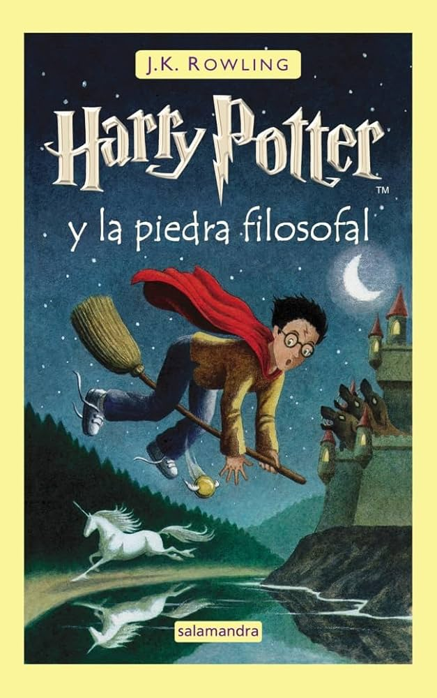

Harry Potter y la piedra filosofal
Ficha técnica
- Autora: J. K. Rowling
- Publicación: 2000
- Título original: Harry Potter and the Philosopher's Stone
- País: Reino Unido
Sinopsis
Harry Potter nunca ha oído hablar de Hogwarts hasta que empiezan a caer cartas en el felpudo del número 4 de Privet Drive. Llevan la dirección escrita con tinta verde en un sobre de pergamino amarillento con un sello de lacre púrpura, y sus horripilantes tíos se apresuran a confiscarlas. Más tarde, el día que Harry cumple once años, Rubeus Hagrid, un hombre gigantesco cuyos ojos brillan como escarabajos negros, irrumpe con una noticia extraordinaria: Harry Potter es un mago, y le han concedido una plaza en el Colegio Hogwarts de Magia y Hechicería.
Harry Potter y la piedra filosofal ha recibido elogios por su narrativa cautivadora, sus personajes memorables y su capacidad para transportar al lector a un mundo mágico inolvidable. Se destaca la fluidez de la escritura y la habilidad de la autora para crear un universo rico y consistente. La obra ha sido celebrada por su capacidad para despertar la imaginación y fomentar el amor por la lectura en jóvenes y adultos. Muchos críticos destacan la importancia de la amistad y la lucha contra el mal como temas centrales, que resuenan con lectores de todas las edades. La obra ha sido traducida a numerosos idiomas y ha vendido millones de ejemplares en todo el mundo, consolidándose como un clásico de la literatura infantil y juvenil. Se considera un libro fundamental para comprender el fenómeno cultural que representa la saga de Harry Potter.
